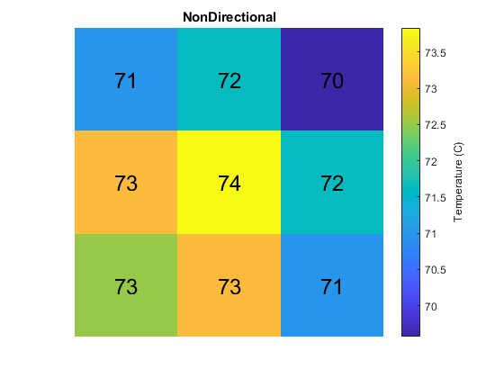
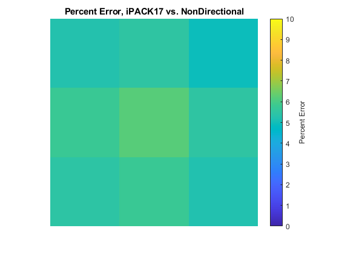

Comparison of GUI-calculated temperature against iPACK17
Comparison of temperatures in lower left device of planar geometry as described in the 2017 iPACK paper "Power Packaging Thermal and Stress Model for Quick Parametric Analyses"
Contents
Workflow for extracting temperature data from NonDirectional
- Construct planar geometry as described in iPACK19 (ipackmodel.ppresults)
- Run solver for temperature and melt fraction values
- Save PPResults object in GUI
- ParaPowerGUI(‘GetResults’).R
- PPResultsObj.getState('Thermal')
Original Planar Geometry (iPACK17 fig. 7)

Input Geometry (recreated in ParaPowerGUI_V2)

% Nondirectional temperature in lower left device mypath = genpath('C:\003_ParaPower\ParaPower\ARL_ParaPower\Stress_Models'); addpath(mypath) load('ipackobj.mat') all_temps = ipack.getState('Thermal'); temp_nondirec_orig = zeros(3); temp_nondirec_orig = all_temps(2:4,2:4,end,end); temp_nondirec_rot = rot90(temp_nondirec_orig); % iPACK17 temperature in lower left device temp_paper = [74.9 75.8 73.2; 77.6 78.7 75.8; 76.7 77.6 74.9]; % temp_nondirec = [71.49 72.17 70.16; 73.57 74.31 72.17; 72.93 73.57 71.48];
iPACK17 temperature (fig. 10)
clf % calculate percent error diff = temp_paper - temp_nondirec_rot; error = diff ./ temp_paper; error_percent = error * 100; imagesc(temp_nondirec_rot) axis off axis square title('NonDirectional') key2 = colorbar; key2.Label.String = 'Temperature (C)'; % overlay NonDirectional temp data for k = 1:9 col = mod(k-1,3) + 1; row = floor((k-1)/3) + 1; text(row,col,sprintf('%.0f',temp_nondirec_rot(k)),'HorizontalAlignment','center','FontSize',18); end figure imagesc(error_percent) axis off axis square title('Percent Error, iPACK17 vs. NonDirectional') key = colorbar; key.Label.String = 'Percent Error'; caxis([0 10]) 